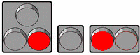
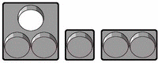

Види світлофорів
Основні види
Автомобільні світлофори
Найпоширеніші світлофори з сигналами (зазвичай круглими) трьох кольорів: червоного, жовтого і зеленого. У деяких країнах замість жовтого використовується помаранчевий колір
Сигнали можуть бути розташовані як вертикально (при цьомуервоний сигнал завжди розташовується зверху, а зелений — знизу), так і горизонтально (при цьому червоний сигнал завжди розташовується зліва, а зелений — справа).
Світлофори для пішоходів
Такі світлофори регулюють рух пішоходів через пішохідний перехід. Як правило, він має два види сигналів: що дозволяє і забороняє. Зазвичай для цієї мети використовують відповідно зелене і червоне світло. Самі сигнали мають різну форму. Найчастіше використовують сигнали у вигляді силуету людини: червоний — що стоїть, зелений — що йде.
У США червоний сигнал часто застосовують у вигляді силуету піднятої долоні (жест «стоп»). Іноді використовують написи «стійте» і «йдіть» (у англійській мові «stop» і «walk», в інших мовах — аналогічно).
Світлофори на залізничних переїздах
Складається з двох горизонтально розташованих червоних ліхтарів і, на деяких переїздах, одного ліхтаря місячно-білого кольору. Білий ліхтар розташований між червоними, нижче або вище лінії, що сполучає їх. Значення сигналів наступне:
- два поперемінно миготливих червоних ліхтарів — рух через переїзд заборонений; даний сигнал зазвичай супроводжується звуковою сигналізацією (дзвінком); 
- миготливий білий ліхтар означає, що технічна система переїзду знаходиться у нормальному стані. Оскільки він не горить, коли переїзд закритий або закривається, біло-місячний ліхтар часто неправильно вважають дозволяючим рух сигналом. 
Реверсійний світлофор
Для регулювання руху по смугах проїжджої частини (особливо там, де можливий реверсивний рух), застосовують спеціальні світлофори контролю смуги (реверсивні). Відповідно до Віденської конвенції про дорожні знаки і сигнали такі світлофори можуть мати два або три сигнали:
- червоний Х-подібний сигнал забороняє рух по смузі;
- зелена стрілка, направлена вниз,дозволяє рух;
- додатковий сигнал у вигляді діагональної жовтої стрілки інформує про зміну режиму роботи смуги і вказує напрям, в якому її необхідно покинути.
Світлофори для маршрутних транспортних засобів
Для регулювання руху маршрутних транспортних засобів (трамваїв, автобусів, тролейбусів) використовують спеціальні світлофори, що відрізняються від країни до країни.
В Україні Правилами дорожнього руху для регулювання руху трамваїв передбачено використання Т-подібного світлофора з «чотирма круглими сигналами біло-місячного кольору».
Верхні сигнали використовуються для вказівки дозволених напрямів руху (наліво, прямо, направо), а нижній — дозволяє початок руху. У Швейцарії для цієї мети використовується одиночний сигнал оранжевого кольору (включений постійно або миготливий).
У країнах Північної Європи використовуються світлофори з трьома секціями, що збігаються за розташуванням і призначенням зі стандартними світлофорами, але мають білий колір і форму знаків: «S» — для сигналу, що забороняє рух, «—» — для застережливого сигналу, стрілка напряму руху — для дозволяючого сигналу.
Також існують світлофори на трамвайних станціях (кінцевих) — тобто поза автомобільними дорогами, що мають по 2 секції — червону і зелену. Вони служать для вказівки порядку відправлення трамвайних потягів з різних шляхів станції.
Не існує міжнародного стандарту для світлофорів для маршрутних транспортних засобів, і вони можуть сильно відрізнятися навіть в сусідніх країнах.
Світлофор із мигаючим червоним сигналом
Червоний миготливий сигнал (як правило, на світлофорах з миготливою однією або поперемінно миготливими двома червоними секціями) використовується для огородження перетинів з трамвайними лініями при наближенні трамвая, мостів при розводці, ділянок дороги поблизу злітно-посадочних смуг аеропортів при зльоті і посадці літаків на небезпечній висоті.
Ці світлофори аналогічні тим, що використовуються на залізничних переїздах.
Світлофори для велосипедистів
Для регулювання руху велосипедів іноді застосовують спеціальні світлофори. Це може бути світлофор, сигнали якого виконані у формі силуету велосипеда, або звичайний трибарвний світлофор, забезпечений спеціальною табличкою.
Залізничний світлофор
Залізничні світлофори призначені для регулювання руху потягів, маневрових складів, а також регулювання швидкості розпуску з сортувальної гори. Також світлофори або додаткові світлові покажчики можуть інформувати машиніста про маршрут або як-небудь конкретизувати свідчення.
Залізничні світлофори є як наземні так і локомотивні (встановлені на пульті керування локомотива).Іноді залізничний світлофор помилково називають семафором.
Річковий світлофор
Річкові світлофори призначені для регулювання руху річкових суден. В основному використовуються для регулювання проходу суден через шлюзи. Такі світлофори мають сигнали 2-х барв — червоного і зеленого.
Розрізняють дальні й ближні річкові світлофори. Дальні світлофори дозволяють або забороняють підхід кораблів до шлюзу. Ближні світлофори встановлюються безпосередньо перед і всередині камери шлюзу на правій стороні по ходу руху судна. Вони регулюють вхід транспорту всередину шлюзової камери і вихід з неї.
Слід зазначити, що неробочий річковий світлофор (не горить жоден із сигналів) забороняє рух суден.
Світлофори у автоспорті
У автоспорті світлофори можуть встановлюватися на маршальських постах, на виїзді з піт-лейн і на стартовій межі. Стартовий світлофор підвішується над трасою так, щоб він був добре видний там, хто стоїть на старті.
Розташування вогнів: «червоний — зелений» або «жовтий — зелений — червоний». Сигнали світлофора дублюються з протилежного боку (щоб всім уболівальникам і суддям була видна процедура старту). Часто на гоночному світлофорі не один червоний ліхтар, а декілька (на випадок, якщо лампа згорить).
Сигнали стартового світлофора такі:
- Червоний: Приготуватися до старту!
- Червоний гасне: Старт! (старт з місця)
- Зелений: Старт! (старт з ходу, кваліфікація, прогрівальне коло)
- Миготливий жовтий: Зупинити двигуни!